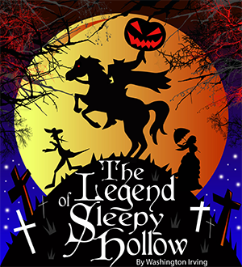
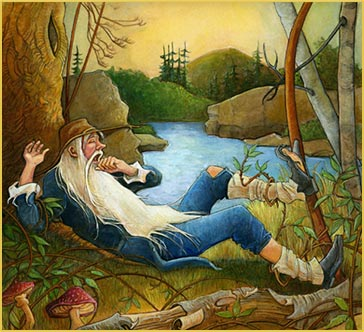

Stories by Washington Irving
The Legend of Sleepy Hollow
 In the bosom of one of those spacious coves which indent the eastern shore of the Hudson, at that broad expansion of the river denominated by the ancient Dutch navigators the Tappan Zee, and where they always prudently shortened sail and implored the protection of St. Nicholas when they crossed, there lies a small market town or rural port, which by some is called Greensburgh, but which is more generally and properly known by the name of Tarry Town. This name was given, we are told, in former days, by the good housewives of the adjacent country, from the inveterate propensity of their husbands to linger about the village tavern on market days. Be that as it may, I do not vouch for the fact, but merely advert to it, for the sake of being precise and authentic. Not far from this village, perhaps about two miles, there is a little valley or rather lap of land among high hills, which is one of the quietest places in the whole world. A small brook glides through it, with just murmur enough to lull one to repose; and the occasional whistle of a quail or tapping of a woodpecker is almost the only sound that ever breaks in upon the uniform tranquillity.I recollect that, when a stripling, my first exploit in squirrel-shooting was in a grove of tall walnut-trees that shades one side of the valley. I had wandered into it at noontime, when all nature is peculiarly quiet, and was startled by the roar of my own gun, as it broke the Sabbath stillness around and was prolonged and reverberated by the angry echoes. If ever I should wish for a retreat whither I might steal from the world and its distractions, and dream quietly away the remnant of a troubled life, I know of none more promising than this little valley.
From the listless repose of the place, and the peculiar character of its inhabitants, who are descendants from the original Dutch settlers, this sequestered glen has long been known by the name of SLEEPY HOLLOW, and its rustic lads are called the Sleepy Hollow Boys throughout all the neighboring country. A drowsy, dreamy influence seems to hang over the land, and to pervade the very atmosphere. Some say that the place was bewitched by a High German doctor, during the early days of the settlement; others, that an old Indian chief, the prophet or wizard of his tribe, held his powwows there before the country was discovered by Master Hendrick Hudson.
from "The Legend of Sleepy Hollow", by Washington IrvingRip Van Winkle
There lived a simple, happy man, named Rip Van Winkle. He was a kind neighbor and obedient husband. He tried to help the people in the village. He listened to the women who told him their problems and gossips, he played with the children and told them stories about ghosts, witches and Indians. He also helped the men build fences and repair their tools. He had a lot of things to do, but he had no time to work in his own house and on his own farm. So, it was the worst piece of land in the whole country. He also didn’t earn much money, because he helped his neighbors all the time. His children wore ragged clothes, his house was old and in bad condition. His wife always told him to go to work to earn some money. And Rip always shrugged his shoulders and said nothing. He went out of the house with his dog Wolf, and sat on a bench outside a small inn with other similar men of the village and talked about village things and sleepy stories about nothing important.
Rip Van Winkle liked hunting, too. He liked going to the mountains to shoot squirrels. He also liked sitting in the mountains and watching the world below—the blue River Hudson, vast green woods, and white cliffs in the distance. One day, he stayed in the mountains late. It was getting dark when he started walking down to the village. Then he heard a voice.
"Rip Van Winkle! Rip Van Winkle!" Somebody was calling out his name. He looked in the direction and saw a strange figure with something on the back. Rip was surprised to see a human being in this deserted place, but he thought it could be somebody from the village. He went to the figure. It was a short old man with wild grey hair and grey beard. His clothes were old-fashioned. On his shoulder he had a big barrel full of liquor. Rip helped the man with the barrel. They went up the hill. On the way Rip heard some noise, something like thunder. Then they came to an opening in the woods. In the middle of the meadow there were some strange people playing a game of nine pins, sometimes called skittles. Their clothes were also oldfashioned. They all had beards of various shapes and colors. The whole group reminded Rip of the figures in an old Dutch painting. They poured the liquor into cups and continued playing. Rip was afraid. He didn't say a word and when the strangers didn't look, he also tried the liquor. It was a tasty old Dutch liquor. He tried another cup and another one, and finally he was drunk. He lay on the ground and fell asleep.
from "Rip Van Winkle" by Washington Irving